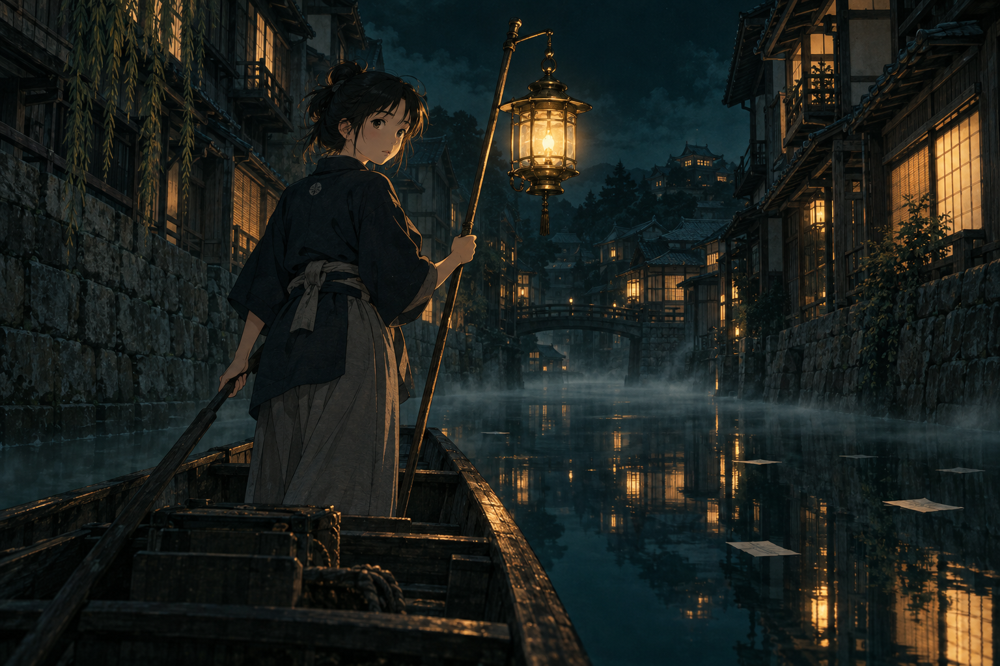
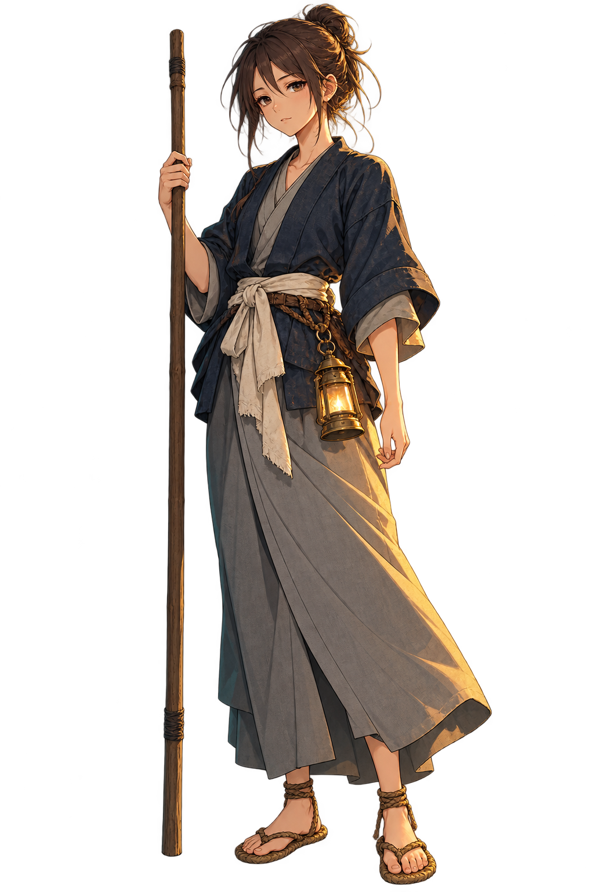
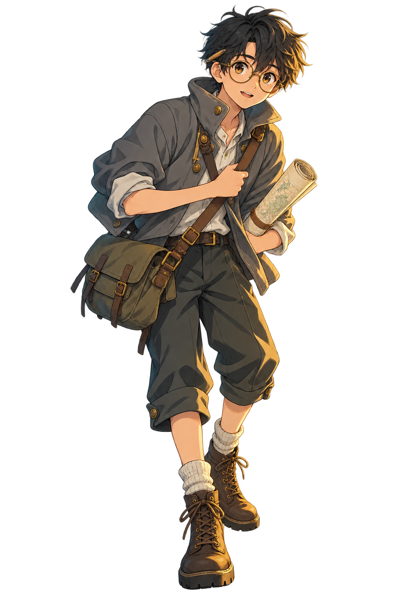
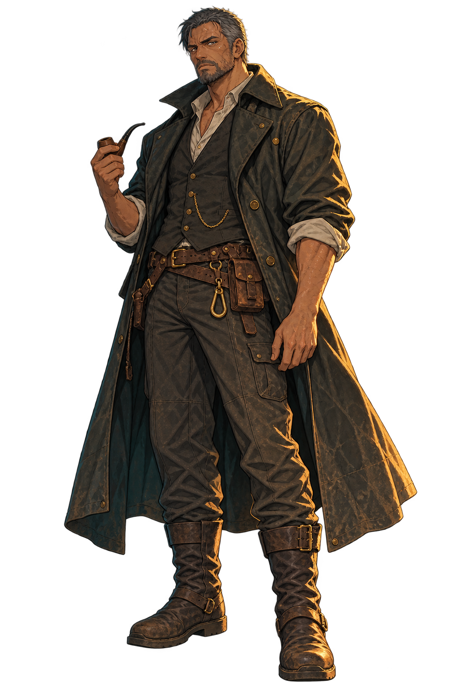
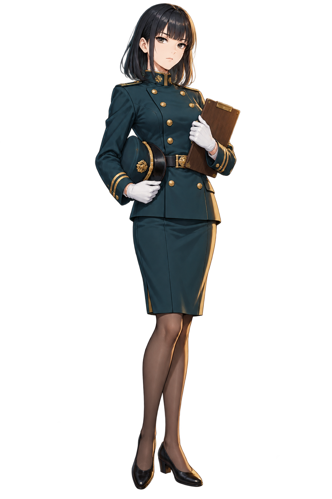
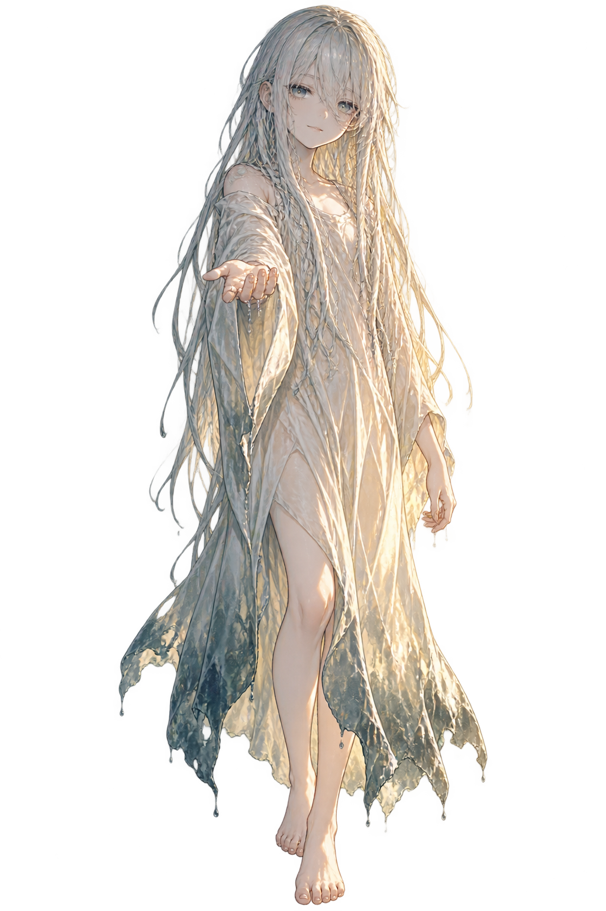

みぎわ すずな
汀 すずな
十四で親方に拾われ、三年前に灯漕の免許を取った。水の音の聞き分けだけは親方より上で、沈み言のある場所をほとんど外さない。ただ人に返すのが苦手で、拾った言葉を自分の帳面に写してから、何日も持ち歩く癖がある。
声七尾 すみれ

沈めた言葉を、
拾いにいく。
HIKOGIひこぎ
2027年1月 放送開始
テレビ瑠央 毎週金曜 24:00 ／ 全12話
言えなかったことは、水の底で灯を待っている。
壺中（こちゅう）の町には八十七本の水路が通っていて、そのどれかの底には、誰かが言えなかった言葉が沈んでいる。口に出せなかった謝罪、渡せなかった手紙、呼べなかった名前。町の人はそれを「沈み言（しずみごと）」と呼び、見なかったことにして暮らしている。
日が落ちると、水路に平底の舟が出る。舳先に真鍮の灯を掛け、棹一本で水をゆく「灯漕」の舟だ。灯を水面に近づけると、沈み言は光をたよりに浮いてくる。拾って、持ち主のところへ返す。それが灯漕の仕事で、汀すずなは三年目になる。
その年の秋、水道局が八十七本のうち三十一本を埋める計画を出した。埋められた水路の沈み言は、もう誰にも拾えない。最後の夜回りですずなが灯を下げたとき、水面に映ったのは自分の顔ではなかった。





みぎわ すずな
十四で親方に拾われ、三年前に灯漕の免許を取った。水の音の聞き分けだけは親方より上で、沈み言のある場所をほとんど外さない。ただ人に返すのが苦手で、拾った言葉を自分の帳面に写してから、何日も持ち歩く癖がある。
声七尾 すみれ
つぼい さく
町の水路図をひとりで引き直している。縮尺は正確なのに方角だけ毎回ずれるので、彼の地図で歩くと必ず同じ橋に戻ってくる。すずなの舟に断りもなく乗り込んでは、測ってもいない支流を書き足していく。
声都築 みなと
うのき げんとう
二十年前までは水道局の技師で、三十一本を埋める最初の図面を引いたのは本人だ。そのことを町の誰にも話していない。すずなに教えたのは棹の握りと、水に向かって喋らないというたった一つの決まりだけ。
声大蔵 恭平
ひだ ましろ
埋立の立会人として配属された新任。手続きには一つも隙がなく、灯漕の邪魔もしない。ただ毎晩、埋める予定の水路にひとりで立って、何も書かれていない帳面を開いている。
声近衛 さや
あさぎ
三十一番水路の、水の中にいる。濡れたまま乾かない。すずなの灯だけを覚えていて、名前を呼ぶと振り向くけれど、自分のことは何も言わない。差し出してくるのは、いつも誰かが落とした物だ。
声鹿沼 りん
主題歌「水底のてがみ」／ ニオと群青
エンディングテーマ「ひとつぶ」／ 七尾 すみれ
第1弾PVでは主題歌の一部を使用します。公開はいずれも日本時間です。
2027年1月8日より放送開始
第1話「八十七本」／ 全12話
毎週 金曜 24:00
最速放送。1月8日 スタート。
毎週 土曜 26:10
1月9日 スタート。
毎週 日曜 23:30
1月10日 スタート。字幕放送あり。
毎週 火曜 22:00
1月12日 スタート。同週内に再放送。
配信は毎週金曜 24:30 より、国内の主要配信サービスにて順次開始します。放送および配信の時刻は変更になる場合があります。
声の出演